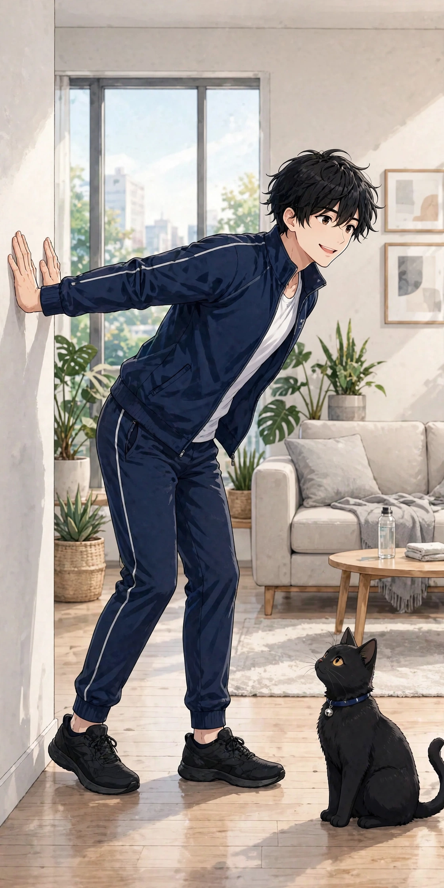
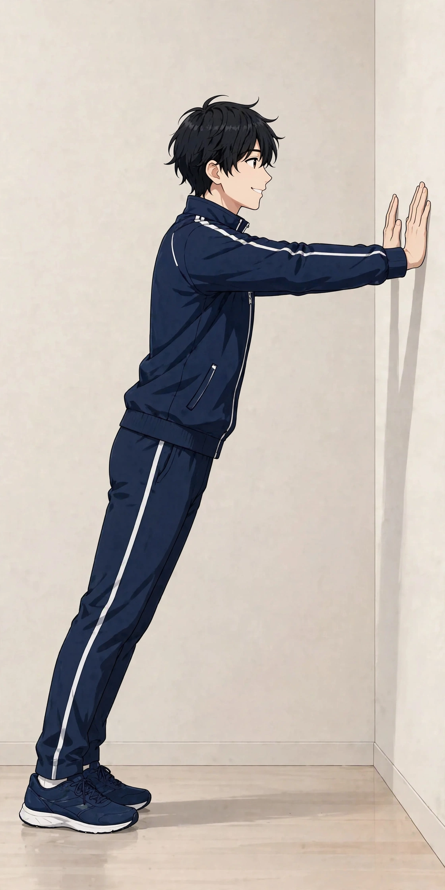
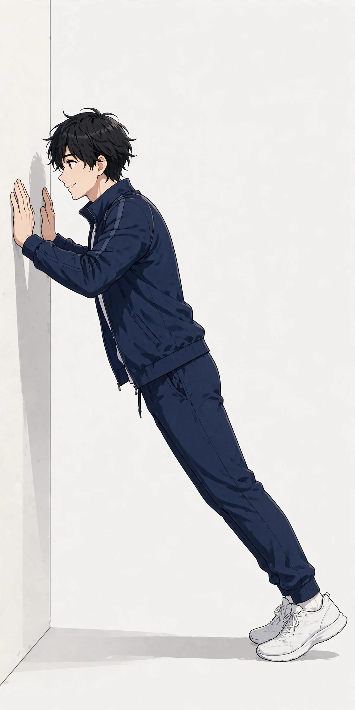

二の腕・胸の壁プッシュアップ（男性）

ノクス：壁があれば、どこでもできるにゃ。肩がすくまないように見るにゃ。
やり方1：壁に向かって立つ位置と手の置き方（図1）
- 壁に向かって立ち、壁から腕の長さほど離れます。足は肩幅に開き、かかとは床につけたままにします
- 両手を壁につき、手の高さは肩の高さ、手の幅は肩幅にします。指は上向きにして、手のひら全体を壁につけます（図1）
- 頭からかかとまでが一直線になるように、体を斜めにします。腰を反らせたり、お尻を突き出したりしないように気をつけてください
- 壁から離れるほど負荷が上がります。最初は壁に近い位置から始めて、慣れてきたら少しずつ離れてください

やり方2：肘を曲げて胸を壁へ近づける（10回×2セット）（図2）
- 息を吐きながら、肘を曲げて胸をゆっくり壁へ近づけます。胸が壁につく直前で止めます（図2）
- 肘は体の横に軽く沿わせるイメージで、肘が外へ大きく開かないようにします
- 息を吸いながら、ゆっくり体を押し戻します。反動で一気に戻さず、3秒かけて戻すイメージで行ってください
- 10回を1セットとして、休憩をはさんで2セット行います

服の見え方との関係
二の腕と胸まわりが動くようになると、シャツの袖まわりとジャケットの胸のラインがすっきり見えやすくなります。壁プッシュアップは、二の腕の裏側と胸の前側を使う動きです。シャツの袖が二の腕に張りついて見える人は、二の腕まわりを動かしておくと、袖のラインがきれいに見えやすくなります。服側の選び方は首元が伸びないTシャツの選び方と清潔感シャツの選び方、猫背でジャケットが決まらない人のアウターの選び方にまとめています。ジャケットの胸が開いて見える人は、胸まわりを動かす習慣と一緒に、ジャケットのサイズが合っているかも確認してください。肩幅と胸まわりが合っていないジャケットは、動いたときに胸が開いて見えやすくなります。
効かせるコツと呼吸
壁プッシュアップで一番大事なのは、反動を使わず、ゆっくり行うことです。息を吐きながら胸を壁へ近づけ、息を吸いながら押し戻すのが基本です。3秒かけて近づけ、3秒かけて戻すイメージで行ってください。速く行うと、腕の力だけで動いてしまい、二の腕と胸に力が入りにくくなります。
もう1つのコツは、手の幅を変えることです。手の幅を肩幅より少し狭くすると、二の腕の裏側に力が入りやすくなります。手の幅を肩幅より少し広くすると、胸の前側に力が入りやすくなります。どちらも、肘が外へ大きく開かないように気をつけてください。肘が開きすぎると、肩に負担がかかります。肩がすくまないように、肩を下げたまま行ってください。鏡で横から見ると、頭からかかとまでのラインが一直線になっているか確認できます。腰が反っていると感じたら、壁に近づいて負荷を下げてください。
回数の増やし方（4週間の目安）
- 1週目：10回×1セット、週3回（壁に近い位置から始める）
- 2週目：10回×2セット、週3回
- 3週目：15回×2セットまで増やす（無理のない範囲で）
- 4週目：足を一歩後ろへ下げて、壁から少し離れた位置で行う（負荷を上げる）
二の腕や胸まわりが筋肉痛のように張る日は休んでください。痛みではなく「使った感じ」程度なら、回数を減らして軽く行う形でも大丈夫です。手首に痛みが出たら、その日は中止してください。手首が痛いときは、手の位置を少し低くするか、壁に近い位置で行ってください。痛みが続く場合は医療機関に相談してください。
朝と夜の使い分け
朝は、起きがけの体が固い時間帯です。回数を少なめにして、ゆっくりと行ってください。朝に壁プッシュアップをすると、肩まわりが動いて、シャツやジャケットの着心地がよくなります。夜は、1日のデスクワークのあとに、深い呼吸と一緒にゆっくり行うのが向いています。デスクワーク後の首・肩のこわばりが気になる人はデスクワーク後の首・肩のこわばりリセットもあわせてどうぞ。どちらも、痛みがあるときは行わないでください。お風呂上がりの体が温まった時間帯も、動きやすいのでおすすめです。壁プッシュアップは、床に座ったり寝たりしないので、スーツのままでも行えます。出かける前に1セットだけ行う習慣にすると、ジャケットの胸のラインがすっきり見えやすくなります。
この記事のテーマに合う用品


あわせて読みたい：トレーニング用品一覧／お腹対策のドローイン／デスクワーク後の首・肩のこわばりリセット